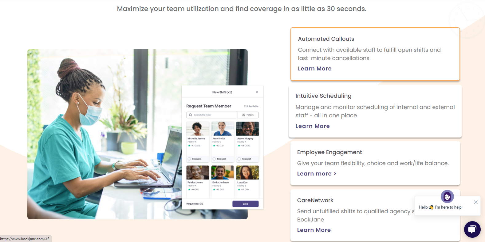
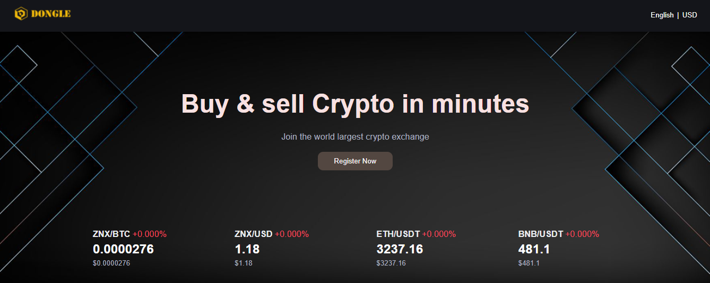
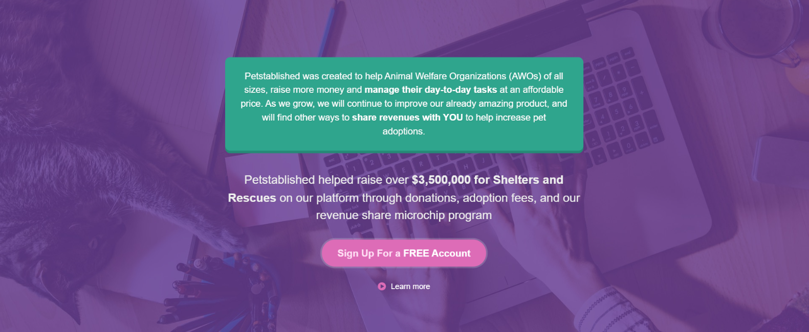
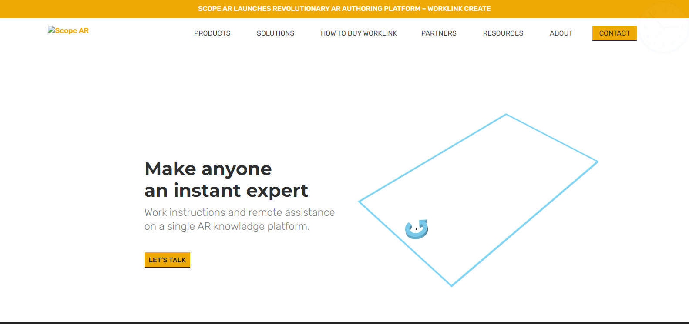

|
Marugo Tomoaki
Fullstack Developer, RoR Lover
I have no special talents.
Only passion. Email:geekunicorn1010@gmial.com Skype: @marugotomoaki(live:.cid.ec443fa6b2c72682) Github: @marugo tomoaki |
About
Mr. Marugo is an innovative full-stack software developer with experience working with Ruby(Rails) Python(Django) PHP(Laravel) Node.Js (ExpressJS) Javascript (Vue.js and React) and experience working with Blockchain(NFT, DeFi). Ruby is created by Japanese, and my father and mother are Japanese. It is the reason why I could be a Ruby expert. As a developer, I always set goals and thrive as hard as possible to achieve them within the planned time. I have no special talents. I believe only my passion.
Experience
Technosoft Solutions Petstablished Full Stack Developer Employment Jan 2020 - present Healthcare
Ruby on rails used for backend development
Vue.js is used for uploaders only
Jenkins is used for auto deployments
Angular JS is being used as frontend.
AWS EC2 used as deployment server.
Developers Incorporate Eduleaf Full Stack Developer Employment Aug 2019 - Dec 2019 Education
Ruby on Rails was used to build apis and provide data to frontend.
Postgres DB was used in project.
AWS EC2 instance was used for deployment machine
Git used for maintaining code versions
Developers Incorporate ScopeAR Full Stack Developer Employment Mar 2019 - Aug 2019 Technology
Ruby on Rails was used to build apis and provide data to frontend.
Reactjs was used to built frontend in a separate repository
Jira was used for project management
AWS EC2 instance was used for deployment machine
Postgres DB was used in project.
Developers Incorporate Bookjane Full Stack Developer Employment Aug 2018 - Feb 2019 Healthcare
Ruby on Rails was used to build apis and provide data to the frontend.
Reactjs was used to built the frontend in a separate repository
AWS Elastic Beanstalk used for deployment
Google Maps API was used get locations of users
Postgres DB was used in project.
Developers Incorporate Intellirent Full Stack Developer Employment Jul 2017 - Jul 2018 Real Estate
Postgres DB was used in project
Github was used to maintain versions of code on repository.
Ruby on Rails was used as backend development language.
Heroku was used to deploy code on servers online.
Google Maps API was used to show listings on map
Preferred time for Interview on Skype, Google, Zoom
09:00 - 20:00 GMT+2Professional Activities
- Journal Reviewer
- IEEE Transactions on Multimedia (TMM)
- Pattern Recognition (PR)
- IEEE Access
- IEEE Geoscience and Remote Sensing Letters (GRSL)
- IEEE Transactions on Medical Imaging (TMI)
- Applied Sciences
- Sensors
- Conference Reviewer
- IEEE Winter Conference on Applications of Computer Vision (WACV), 2019, 2020
- International Conference on Pattern Recognition (ICPR), 2020
- International Joint Conference on Artificial Intelligence (IJCAI), 2019
- IEEE International Conference on Tools with Artificial Intelligence (ICTAI), 2018, 2019
Complete Educational details (Bachelor’s & Masters with Year)
Kyoto University, JapanB.S. in Information Science
(Yoshidahonmachi, Sakyo Ward, Kyoto, 606-8501, Japan)
09/01/2012 - 11/15/2017
Major: Computer Science
Level: Bachelor’s Degree in Computer Science from UTM, 10/03/2017
Availability
Full Time, 40 hours per week.Skills
Ruby on rails · AWS EC2 · Python Django PHP Laravel Reack Vue · React Jenkins · Heroku · AWS Elastic Beanstalk · JIRA · Git ·Language
English, Japanese(entry level), ChineseInterests
Swimming, Driving, Listening Music, TennisPortfolio
|
 Developers Incorporate Bookjane Full Stack Developer Employment Aug 2018 - Feb 2019 Healthcare |
 Developers Incorporate DongleTrade Blockchain Developer Employment Aug 2019 - Dec 2019 DongleTrade is CEX project for Zilionixx chain. |
Developers Incorporate Eduleaf Full Stack Developer Employment Aug 2019 - Dec 2019 Education |
|
Developers Incorporate Intellirent Full Stack Developer Employment Jul 2017 - Jul 2018 Real Estate |
 Technosoft Solutions Petstablished Full Stack Developer Employment Jan 2020 - present Healthcare |
 Developers Incorporate ScopeAR Full Stack Developer Employment Mar 2019 - Aug 2019 Technology |